Thermal Fracture & Crack Interaction in Coating–Substrate Systems
Finite-element investigation of thermally induced residual stresses, crack driving force, and interaction between multiple cracks in a coated substrate system.
Project overview
This term project was developed as part of a UCLouvain course assignment on fracture and diffusion. The study investigated cracking in a coating–substrate assembly subjected to a large temperature drop. The assignment focused on evaluating residual stresses and crack driving force, then studying how elastic mismatch and the presence and position of a second crack modify the fracture response.
Problem
Thermal-expansion mismatch between coating and substrate generates residual stresses that can drive crack propagation.
Numerical framework
2D plane-strain finite-element modelling with refined meshes around crack tips and fracture-integral evaluation.
Main metric
The J-integral was used as a measure of the crack driving force, together with local stress-field comparisons.
Model and loading
The assignment defined a perfectly bonded coating/substrate assembly and imposed a homogeneous temperature drop from 520 °C to 20 °C. The coating thickness was 10 µm and the substrate thickness was 300 µm. The baseline material data specified E = 400 GPa and ν = 0.3 for both materials, while their thermal-expansion coefficients differed: 10−6 K−1 for the coating and 10−5 K−1 for the substrate.
The project assignment specified plane-strain elements for the analyses.
Crack configurations
The study included crack configurations inside the coating, close to the coating/substrate interface, and cracks penetrating into the substrate. A second stage varied the coating/substrate Young's-modulus ratio, and the final stage introduced a second crack at different separations to examine crack interaction and shielding/anti-shielding effects.
Crack-interaction study
For the final part, the second crack was positioned at three different X-direction distances from the main crack and at three different Y-direction separations. J-integral curves and near-tip stress fields were extracted for comparison.
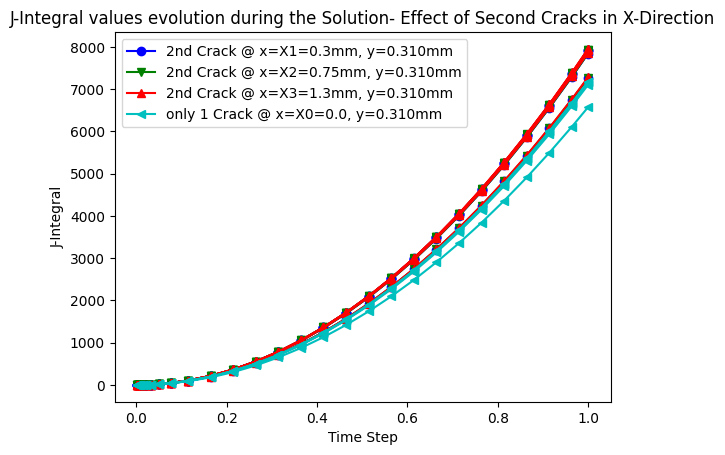
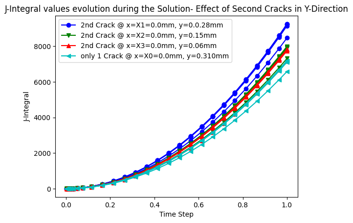
Key observations from the project
| Observation | Reported project result |
|---|---|
| Second crack in X direction | The J-integral at the main crack increased slightly when the second crack was introduced. The report also notes a very small J value for a second crack located far from the main crack. |
| Second crack in Y direction | The increase in the main-crack J-integral was reported to be more considerable than for the X-direction cases. |
| Near-tip stress field | The report found an increase in the stress component associated with Mode-I crack propagation at the main crack when a nearby second crack was introduced, particularly for the closest Y-direction configuration. |
| Interaction interpretation | Because the reported crack driving force increased, the project interpreted these configurations as showing anti-shielding behavior, with the effect more pronounced in the Y direction. |
Finite-element results
The following Abaqus results show the refined crack-tip regions and the stress fields used to compare the different crack-separation cases. These are the original project figures.
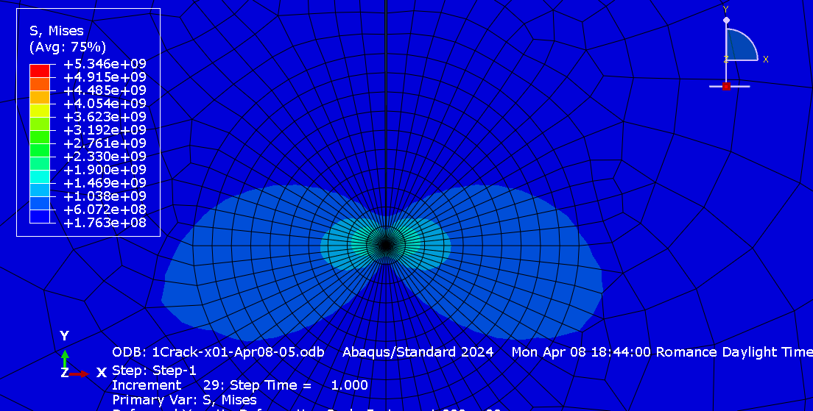
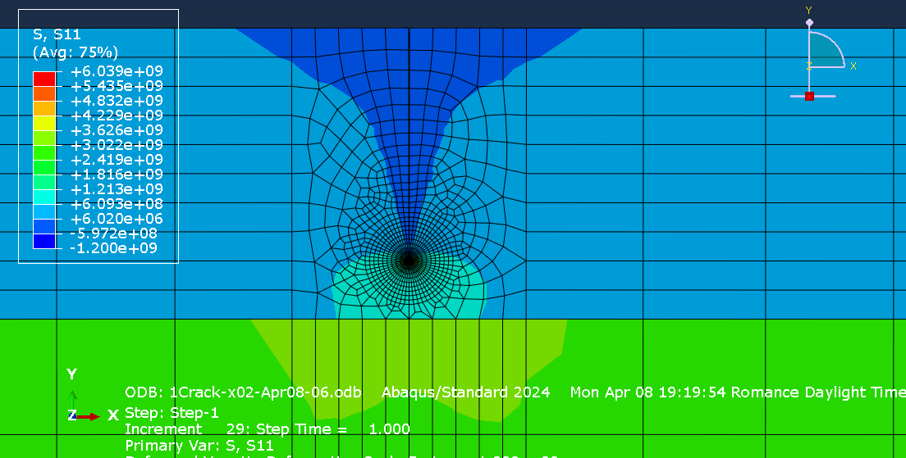
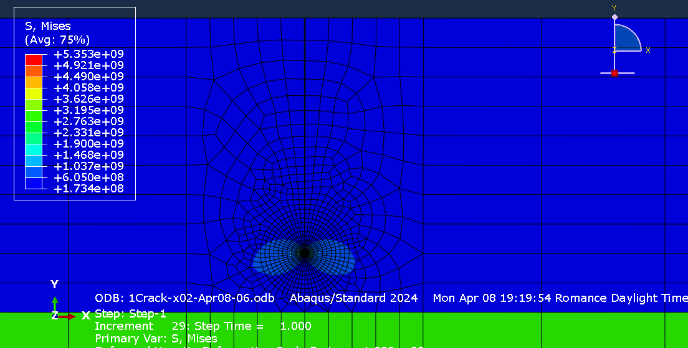
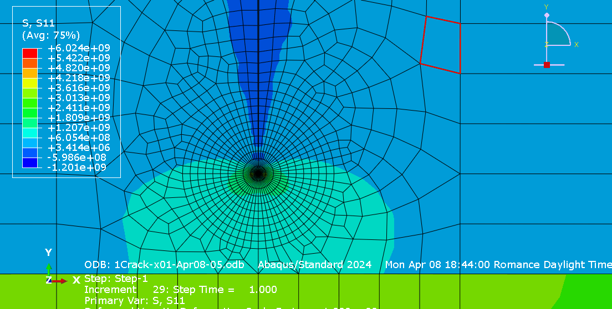
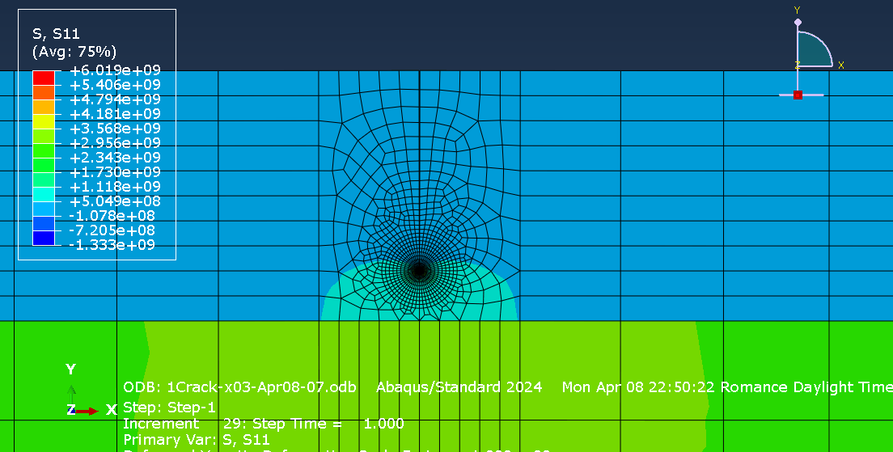
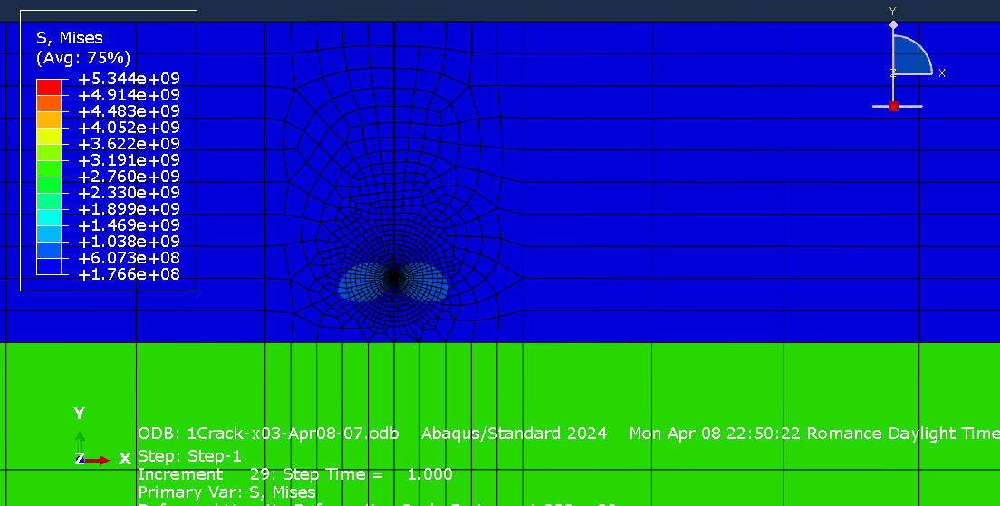
Y-direction interaction
Additional simulations placed the second crack at different Y-direction separations. The project compared the S11 field around the main crack and found stronger interaction for the closest configuration.
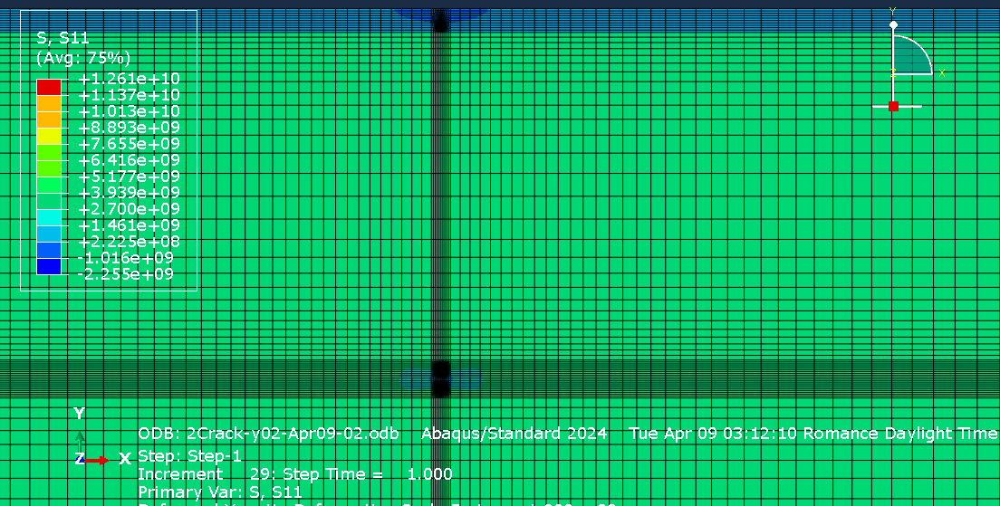
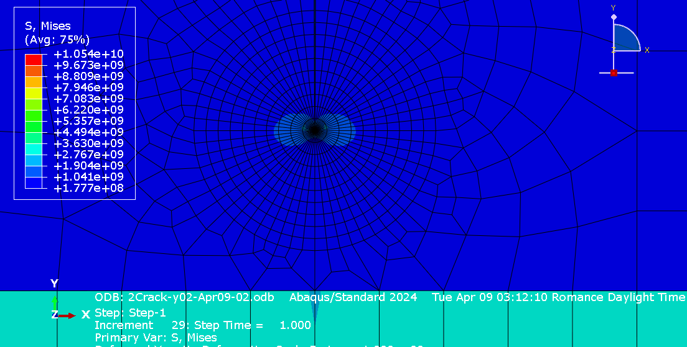
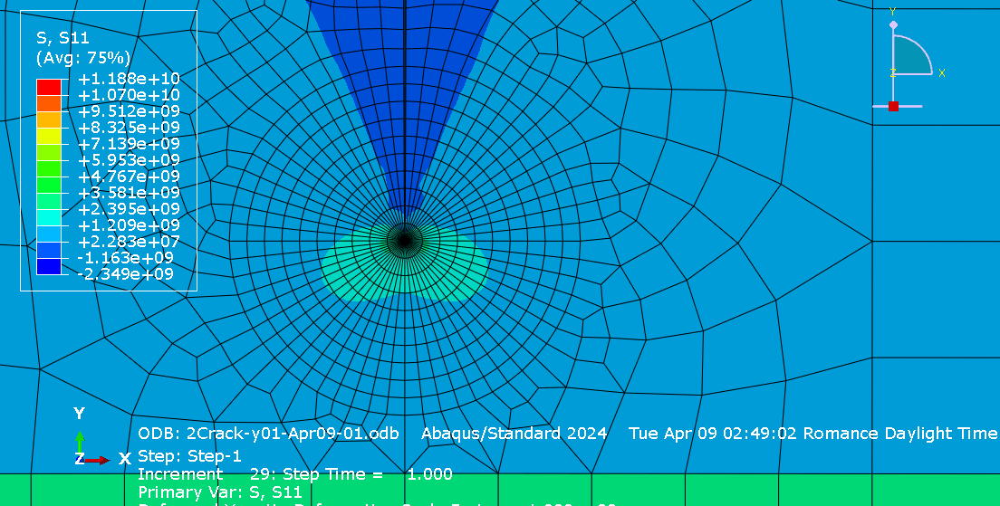
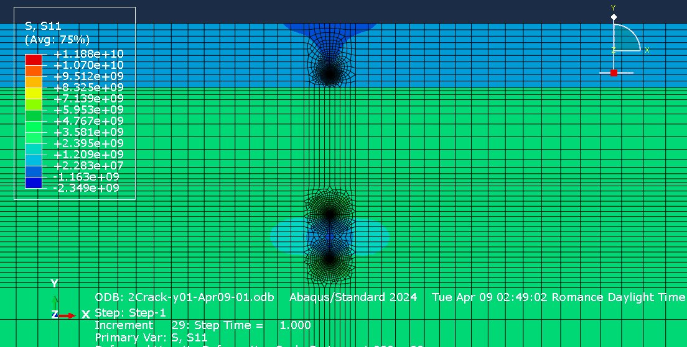
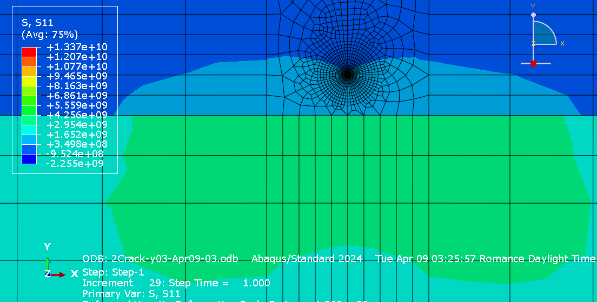
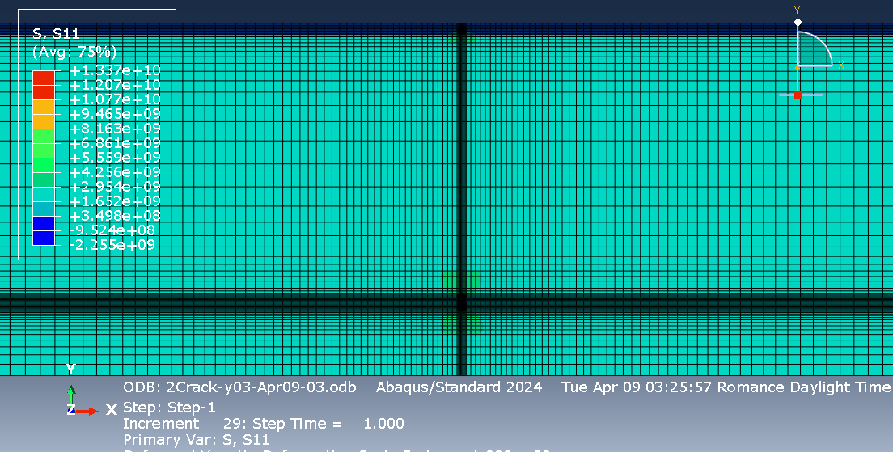
Skills demonstrated
FE modelling
2D plane-strain modelling, crack-tip mesh refinement, thermal loading and boundary conditions.
Fracture mechanics
J-integral evaluation and interpretation of crack driving force and crack interaction.
Post-processing
Comparison of J-integral evolution curves and extraction of near-tip stress distributions.
Parametric analysis
Systematic variation of crack position, crack separation and elastic properties.
Academic context
The assignment required a report limited to five pages and included three stages: thermal residual-stress and crack analysis, elastic-modulus sensitivity, and two-crack interaction. This page focuses on the crack-interaction work documented in the submitted Part III report.
Source: UCLouvain term-project assignment, “Homework 4: Fracture and diffusion,” and the submitted Part III project report. Figures shown here are the original Abaqus/project figures supplied for this portfolio page.
← Back to Computational Mechanics Portfolio